Кристионас Донелайтис
Пасторский дом
На Виштынецкой возвышенности есть место, значительное для любого литовца, для любого человека, влюблённого в эту землю.
...место, значительное для любого литовца, для любого человека, влюблённого в эту землю.
На высоком холме среди лугов, крестьянских усадеб стоит уютная церковь. Церковь, где служил людям необыкновенный пастор; место, где творил знаменитый классик литовской поэзии.
И голос пастора голосом самой природы звучит через века, напоминая нам о времени. О времени — таком изменчивом и таком постоянном в своём неудержимом течении.
Поэма «Времена года» (1765–1775 гг.), перевод Д. Бродского.
2014 год — год 300-летия со дня рождения Кристийонаса Донелайтиса.
Калининградская область, Нестеровский район, пос. Чистые Пруды, ул. Центральная, 38–39.
Тел.: 8 (40144) 9-32-69
Контактные сведения сохранены из архивной версии страницы; актуальность необходимо проверить.
Фото: Э. Барсуков, А. Соколов · 2004–2014 гг.
Фотографии
Празднование 300-летнего юбилея К. Донелайтиса в пос. Краснолесье, 2014 г. Фото: Э. Барсуков, А. Соколов.
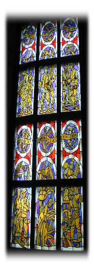
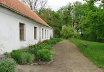
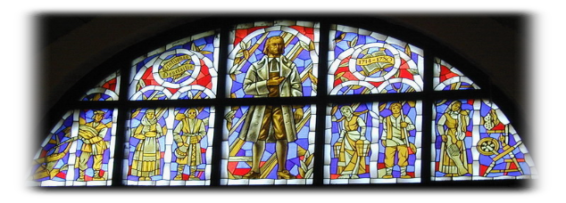
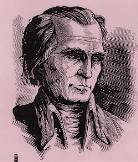
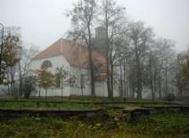
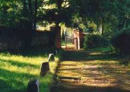
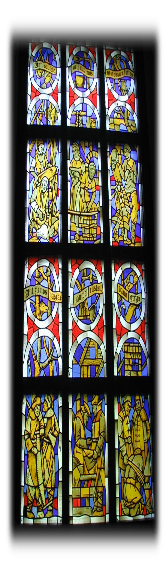
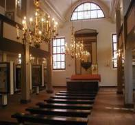
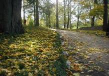
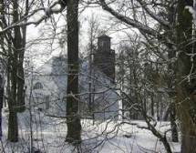
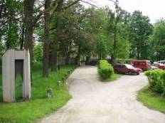
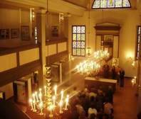
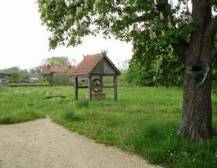
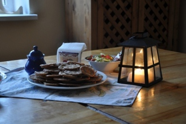